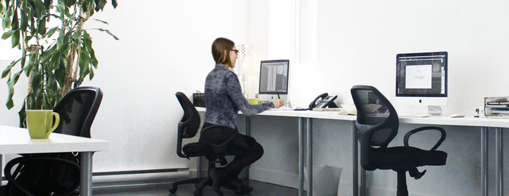
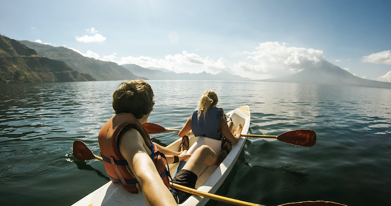

Hello, je me présente !
Je me nomme Amelie Leduc
Études
Sports
Loisirs
Plus grand reve

Mon parcour
J'ai terminer mes études en design graphique il y a un peu plus d'un an.
Depuis, je travil dans une boite de markething à montreal.
J'adore ce ue je fais, je voulais donc complèter le tout et jaime beaucoup apprendre.
Je désir donc pousser mes conaissance en Web.

Mon coté sportif
Je suis une personne qui aime bien rester active et s'entrainer.
Par dessus tout, j'adore m'évader en nature faire de hicking et du kayak
Un tableau pour illustrer mes loisirs
| Mes livre préférés | Mes musées préféré | Age |
|---|---|---|
| Alice - Patrick Senécal | MoMA | 50 |
| La steppe infinie - Esther Hautzing | Musée des beaux arts de montreal | 94 |
| on ne voyait que le bonheur - Grégoire Delacourt | Musée du Louvre | 80 |